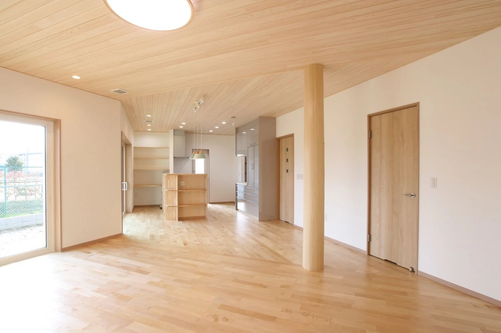
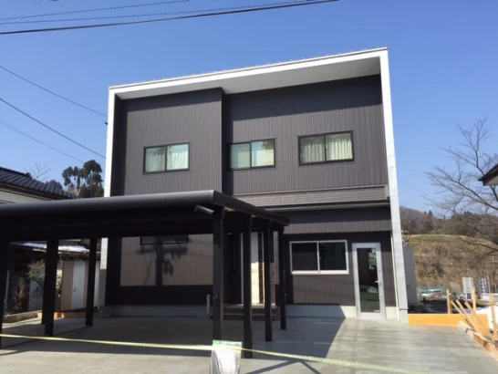

イベント情報
イベント情報①
詳しいご案内
日程・価格・募集内容などは、掲載当時の情報です。


こんにちは。
富山県で自然素材にこだわった家づくりをしている
「フジ創アイノス」と申します。
今日は、イベントについてお知らせいたします。
今回のイベントのお題、
「お悩み解決」という見学会です。
みなさん、家を建てる時、リフォームするとき、
いろんな悩み出てきませんか❔
① 家の構造
➁ お部屋の広さ
③ 防災対策
④ 防犯対策
⓹ 素材
⑥ ペット対応
⑦ お子さん、ご高齢者対策。
➇ リフォーム
書ききれないほど、出てきます。
もちろん、
リフォーム、家を作る。
「金額」
ホントに悩みます。
家を建てる、リフォームしたい。と考えているお方。
この見学会どうでしょうか❔
いろんなお悩み相談「フジ創アイノス」がお聞きいたします。
こちらのイベントは、予約制となります。
駐車場も完備しております。
二週とイベントあります。
第一回目は、
10月15日(土曜日)〜16日(日曜日)です。
二回目は、
10月22日(土曜日)〜23日(日曜)です。
時間(全日)
午前9時〜夜19時になります。
場所⇒砺波市千代853-5
お家、リフォーム不安、悩みをしっかりとお聞きいたします。
気軽にお越しください。
見学会に参加されたお方には、参加者特典があります。先着10名様限定。
「小冊子」プレゼント。
ご来場される方は、マスク着用、手洗い、アルコール消毒。
よろしくお願い致します。
ご予約については、
お電話、そしてwebからもご相談見学予約受付しております。
予約状況
10月15日は、17時〜19時は✖
10月16日は、9時〜11時は✖
この日の時間帯で埋まっている時間を教えいたしました。
気になるお方は、
コチラ「フジ創アイノス」にご連絡お願い致します。
お問い合わせ先、下記の通り。
-------------------------------------------------
フジ創アイノス
富山県高岡市江尻846－1
TEL⇒0800-200-2661
https://www.fujisou-ainos.com/

ぜひご覧ください